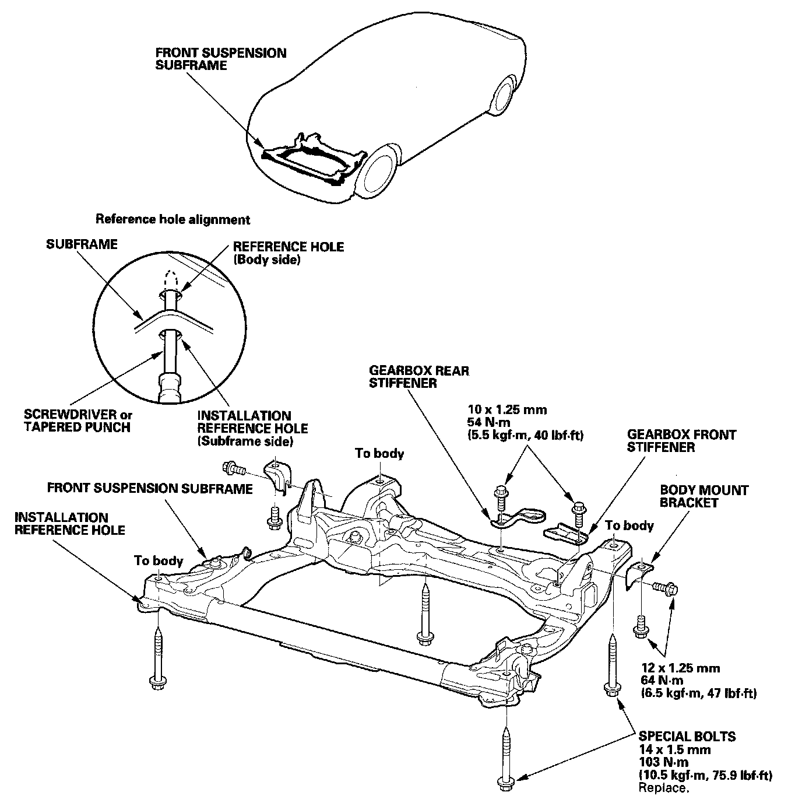

Subframe: Service and Repair
Subframe Replacement
Front Subframe Torque
NOTE:
- After loosening the subframe mounting bolts, be sure to replace them with new ones.
- When installing, align both installation reference holes in the subframe with both reference holes in the body using a screwdriver or tapered punch as a guide.